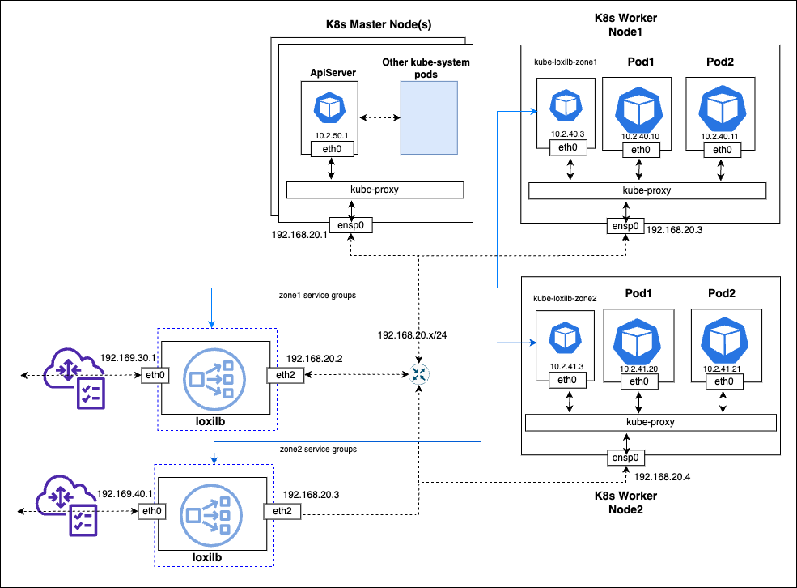

Service-Group zoning in loxilb
kube-loxilb is used to deploy loxilb with Kubernetes. By default a kube-loxilb instance does not differentiate the services in any way and uses a set-of loxilb instances to setup rules related to these services. But there are potential scenarios where grouping of services is necessary. It might be beneficial for increasing capacity, uptime and security of the cluster services.
Overall topology
For implementing service-groups with zones, the overall topology including all components should be similar to the following :

The overall concept is to run multiple sets of kube-loxilb each for a separate zone. Each set of kube-loxilb communicates with a particular set of designated loxilb instances dedicated for that zone. Finally when the services are created, we need to mention which zone we want to place them in using special loxilb annotation.
How to deploy kube-loxilb for zones ?
- The manifest files for deploying kube-loxilb for zones need to mention the zone they cater to. For example:
kube-loxilb-south.yml
args:
- --loxiURL=http://12.12.12.1:11111
- --externalCIDR=123.123.123.1/24
- --zone=south
kube-loxilb-north.yml
args:
- --loxiURL=http://12.12.12.2:11111
- --externalCIDR=124.124.124.1/24
- --zone=north
-
Complete kube-loxilb manifests for zones can be found here which can be further modified as per user need
-
After deployment, you can find multiple sets of kube-loxilb running as follows :
# sudo kubectl get pods -A
NAMESPACE NAME READY STATUS RESTARTS AGE
kube-system coredns-6799fbcd5-6w52r 1/1 Running 0 11h
kube-system local-path-provisioner-6c86858495-gkqgc 1/1 Running 0 11h
kube-system metrics-server-67c658944b-vgjqd 1/1 Running 0 11h
default udp-test 1/1 Running 0 11h
kube-system kube-loxilb-south-596fb8957b-7xg2k 1/1 Running 0 11h
kube-system kube-loxilb-north-5887f5d848-f86jv 1/1 Running 0 10h
How to deploy services for zones ?
- The manifest files for services need to have annotation related to zone they will be served by. For example, we need to specify "loxilb.io/zoneselect" annotation :
apiVersion: v1
kind: Service
metadata:
name: nginx-lb1
annotations:
loxilb.io/lbmode: "fullnat"
loxilb.io/probetimeout: "10"
loxilb.io/proberetries: "2"
loxilb.io/zoneselect: "north"
spec:
externalTrafficPolicy: Local
loadBalancerClass: loxilb.io/loxilb
selector:
what: nginx-test
ports:
- port: 55002
targetPort: 80
type: LoadBalancer
---
apiVersion: v1
kind: Pod
metadata:
name: nginx-test
labels:
what: nginx-test
spec:
containers:
- name: nginx-test
image: nginx:stable
ports:
- containerPort: 80
- Example services manifests for zones can be found here which can be further modified as per user need